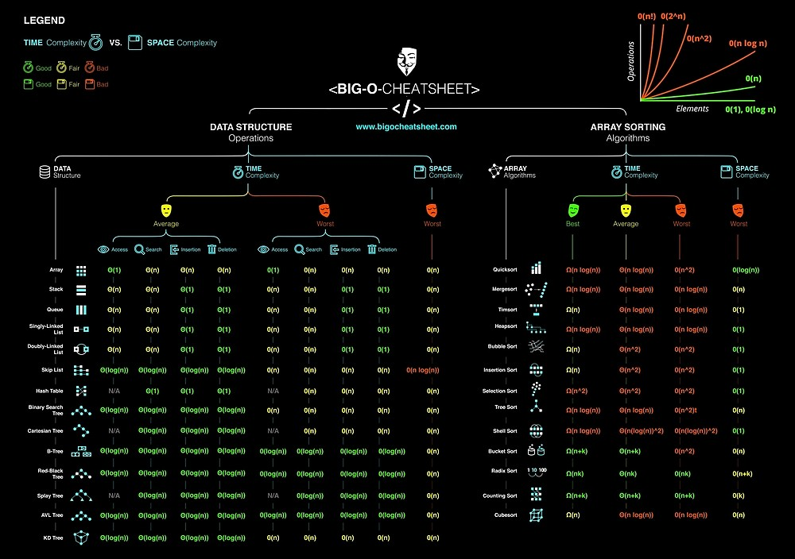

《数据结构与算法之美 - 王争》¶
数据结构和算法是相辅相成的。数据结构是为算法服务的，算法要作用在特定的数据结构之上。

复杂度分析¶

分类¶
-
时间复杂度(asymptotic time complexity)
代码的执行时间随数据规模增长的变化趋势
-
空间复杂度(asymptotic space complexity)
代码的存储空间随数据规模增长的变化趋势
量级¶
- 多项式
- O(1)
- O(n)
- O(\log(n))
- O(n\log(n))
- O(n^2)、O(n^3) ... O(n^k)
- 非多项式
- O(2^n)
- O(n!)
情况¶
- 最好情况时间复杂度(best case time complexity)
- 最坏情况时间复杂度(worst case time complexity)
- 平均情况时间复杂度(average case time complexity)
- 均摊时间复杂度(amortized time complexity)
线性表(Linear List)¶
数组(Array)¶
用一组连续的内存空间，来存储一组具有相同类型的数据
- 随机访问和更新 O(1)
- 搜索、插入、删除 O(n)
链表(Linked List)¶
- 单向链表、循环链表
- 双向链表（空间换时间）、双向循环链表
常见缓存淘汰策略：
- 先进先出策略 FIFO(First In， First Out)
- 最少使用策略 LFU(Least Frequently Used)
- 最近最少使用策略 LRU(Least Recently Used)
栈(Stack)¶
先进后出，后进先出的数据结构
队列(Queue)¶
先进先出的数据结构
递归(Recursion)¶
- 一个问题的解可以分解为几个子问题的解
- 这个问题与分解之后的子问题，除了数据规模不同，求解思路完全一样
- 存在终止条件
问题：堆栈溢出、重复计算、函数调用耗时多、空间复杂度高